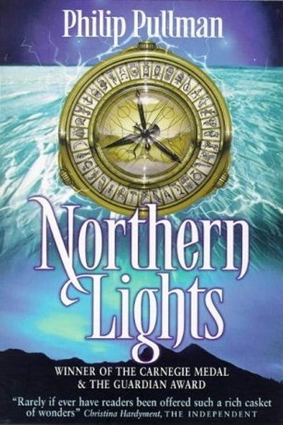
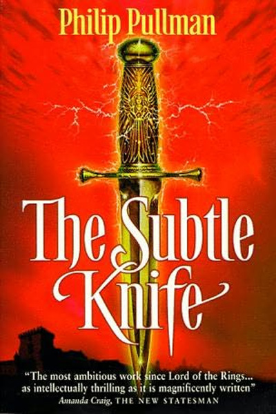
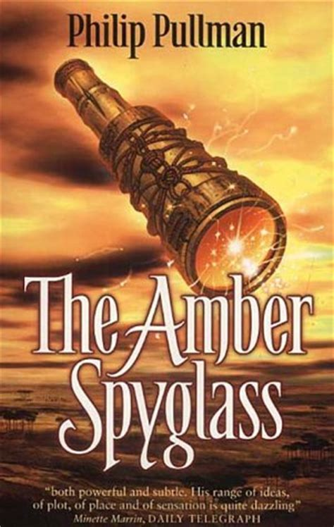
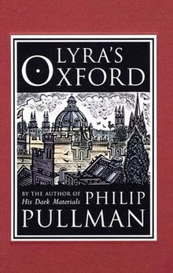
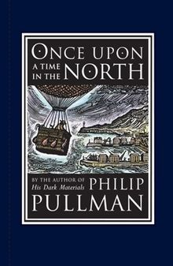
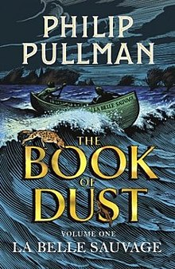

Un monde, étrangement semblable: A la croisée des mondes
Voyageur, tu viens de faire un excellent choix !
J'espère que tu es bien accroché à ton fauteuil (attention aux dents !), parceque nous nous apprêtons à voyager entres les mondes ! Comment dis-tu, peut-on voyager entre les mondes ? Question très pertinente cher voyageur, laisse moi donc te présenter A la Croisée des Mondes de Philip Pulman
A la Croisée des mondes: l'oeuvre la plus populaire de Philip Pulman
À la croisée des mondes (His Dark Materials) est une trilogie du genre fantasy écrite par le romancier britannique Philip Pullman de 1995 à 2000. Elle a été traduite en français par Jean Esch.
La trilogie originale, composée des livres Les Royaumes du Nord (1995), La Tour des anges (1997) et Le Miroir d'ambre (2000), suit le rite de passage de deux adolescents, Lyra Belacqua et Will Parry, qui traversent des univers parallèles en vivant une série d'aventures épiques. Elle est complétée d’œuvres – des préquelles et des romans parallèles – dont l'action se situe dans l'univers d’À la croisée des mondes : Lyra et les Oiseaux (2003) et Il était une fois dans le Nord (2008). L'auteur prévoit aussi une nouvelle trilogie, intitulée La Trilogie de la Poussière (The Book of Dust), dont le premier tome La Belle Sauvage est paru en 2017.
L'auteur s'est fortement inspiré d'un poème anglais du XVIIe siècle, Le Paradis perdu de John Milton, et aborde des thèmes tels que le passage à l'âge adulte, la mort et la religion. Le récit prend la forme d'un roman d'aventures allégorique où Pullman propose sa propre interprétation de l'origine de l'Homme et de son but sur Terre par des questionnements métaphysiques et philosophiques.
Des personnages au coeur de l'histoire
Comme annoncé précedment, on suit l'histoire de deux adolescent, et on observe à travers l'oeuvre de Pulman leur évolution durant la trilogie. Voici donc quelques personnages principaux:
ATTENTION: Cette liste contient de gros spoilers sur l'intrigue du livre, si vous voulez vraiment lire la saga, je déconseille de lire les descriptions des personnages
-
Lyra Belacqua
Lyra Belacqua est une jeune fille de douze ans, un peu « garçon manqué », ayant grandi à Jordan College (Oxford) où son père Lord Asriel l'a abandonnée. Elle est décrite comme une fillette maigrelette aux cheveux blonds foncés en bataille et aux yeux bleus. Elle s’enorgueillit de sa capacité à tromper les gens et excelle dans l'art du mensonge, au point que son ami et protecteur Iorek Byrnison l'a surnommée « Lyra Parle d'Or ». Elle manie l'aléthiomètre de façon presque innée, alors que son utilisation requiert d'habitude des décennies d'expérience. D'un caractère sauvage et intuitif, elle est loyale envers ses amis et porte en elle la culpabilité de la mort de son jeune ami Roger Parslow. Une prophétie prédit qu'elle est « destinée à mettre fin au Destin », sans jamais en avoir conscience et en commettant une grande trahison. Les sorcières la nomment « la nouvelle Ève », parce qu'elle serait soumise à la tentation du serpent, représenté par Mary Malone.
-
Pantalaimon
Pantalaimon est le dæmon de Lyra. Comme tous les dæmons des enfants n'ayant pas atteint la puberté, il change de forme, passant d'une créature à l'autre, avant de devenir, à la fin de la trilogie, une martre des pins rousse, svelte et gracieuse. Lyra est unie à lui pour toujours, mais elle est contrainte de l'abandonner pour pénétrer dans le monde des morts, réalisant de ce fait la trahison évoquée par la prophétie. Elle n'est cependant pas séparée de lui comme l'étaient les victimes de la centrale de Bolvangar.
-
Will Parry
Will Parry, issu de notre monde, est un garçon de douze ans, sensible, mature et délibérément moral. Devenu le détenteur du Poignard subtil, il se trouve en butte aux forces qui le convoitent. Will est indépendant et responsable pour son âge, ne serait-ce que parce qu'il a dû s'occuper de sa mère, mentalement instable. D'autre part, il a acquis la capacité de passer inaperçu.
-
Iorek Byrnison
Iorek Byrnison est un ours en armure exilé que le dépit a rendu alcoolique. Son armure, l'équivalent des dæmons, ayant été volée par les humains, Lyra l'aide à la récupérer et, par là, à lui rendre sa dignité et le trône de Svalbard. À la fois guerrier puissant et forgeron, c'est Iorek qui répare le Poignard subtil lorsqu'il se brise.
le développement des personnage étant trop volumineux, je n'ai pas pu tout mettre ici, mais si jamais vous êtes intéréssés, il existe de très bonnes explications sur leur developement ainsi que sur toutes les références et inspirations de l'auteur lors de l'écriture des romans, ici sur Wikipédia
La Trilogie originale, quelques romans complémentaires, et la seconde Trilogie
Pour information, la Triolgie de la Poussière (The Book of Dust) est la suite de la trilogie A la croisée des mondes et est encore en développement
| Année de parution (VO) | Appartenance | Nom | Couverture |
|---|---|---|---|
| 1995 | A la croisée des mondes | Les Royaumes du Nord (Northern Lights) |  |
| 1997 | La Tour des anges (The Subtle Knife) |  | |
| 2000 | Le Miroir d'Ambre (The Amber Spyglass) |  | |
| 2003 | Livres complémentaires (qui s'inscrivent dans l'univers de la Trilogie originale) |
Lyra et les Oiseaux (Lyra's Oxford) |  |
| 2008 | Il était une fois dans le Nord (Once upon a time in the North) |  | |
| 2014 | The Collectors (Livre audio) | ||
| 2017 | Le Livre de la Poussière | La Belle Sauvage (La Belle Sauvage) |  |